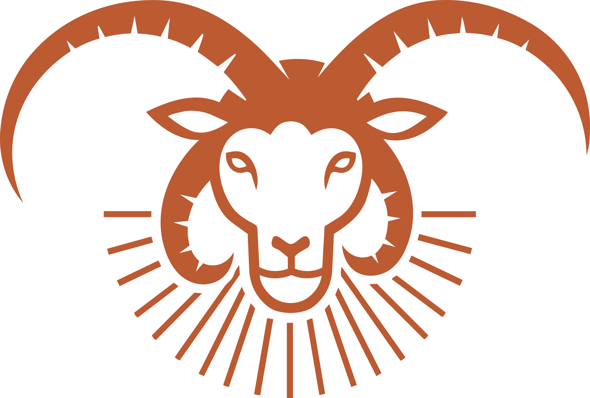
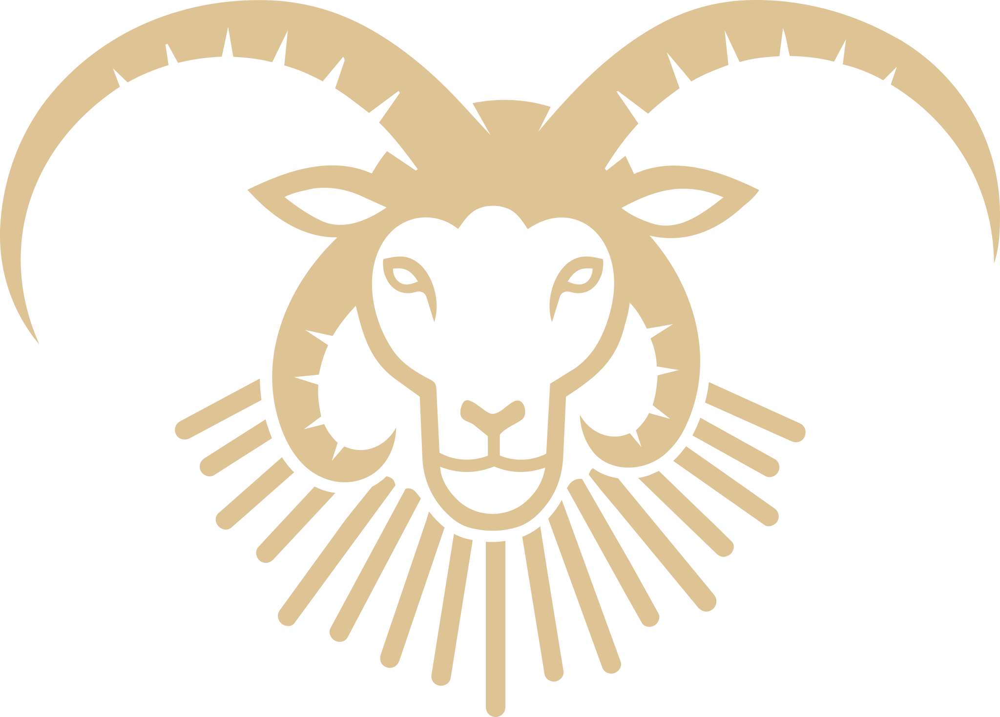
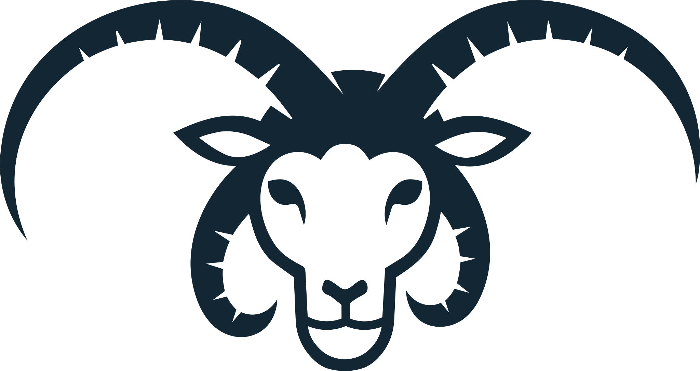

Brand Guidelines
This document covers the proposed mark, color scheme, and type for Kady Youth Sheep Camp — the small working identity that stands beside the camp's name. The camp's hero illustration — the goat in the beam — is where this identity took its inspiration, and we love seeing it out in the world: on posters, on social media, wherever it can shine. It just isn't a logo, so it sits outside these guidelines.
The Churro ram
A four-horned Navajo-Churro ram, drawn by hand from the living animal. The strokes fanning around it read two ways at once: the churro's long fleece, and rays of first light around the flock. One drawing, shown here in its four house colorways — but the mark belongs to the camp, and recoloring it for a poster, a shirt run, or a season is welcome. Just keep it one solid color with strong contrast against its background.



≥ 48PX

< 48PXThe lockup
Beside the wordmark, the ram sits to the left at the height of both text lines together. The wordmark is always Alfa Slab One in caps; the word APPRENTICESHIP beneath it is Space Mono, wide-tracked.
Don't
- Recolor the mark in more than one color at a time — it stays a single solid ink.
- Stretch, rotate, outline, or add shadows and effects.
- Place a low-contrast pair — bone on white, night on rust — or set it over busy photography without a solid panel behind it.
- Separate the horns, rays, or body into new artwork.
- Use the mark in place of the hero illustration, or vice versa.
The palette
Five colors, drawn from the camp itself: night sky over the Carrizos, undyed churro fleece, and rust from the loom's wool. Backgrounds are night or bone; rust is the single action color; wheat is for labels and accents on dark ground only.
Three voices
Three typefaces, each with one job. Never substitute; all three are free on Google Fonts.
How the camp speaks
- Continued, not founded. The camp is an inheritance. Write plainly — short, direct sentences.
- Roy's phrasing stands. Kinship terms, place names, and Diné words are written exactly as the family states them, never translated flat.
- Let the community give the meaning. When describing the mark, speak to what is drawn — the ram, the fleece, the light. Any deeper meaning is the camp's and the community's to name, in their own words and their own time.